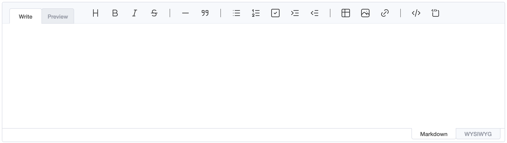
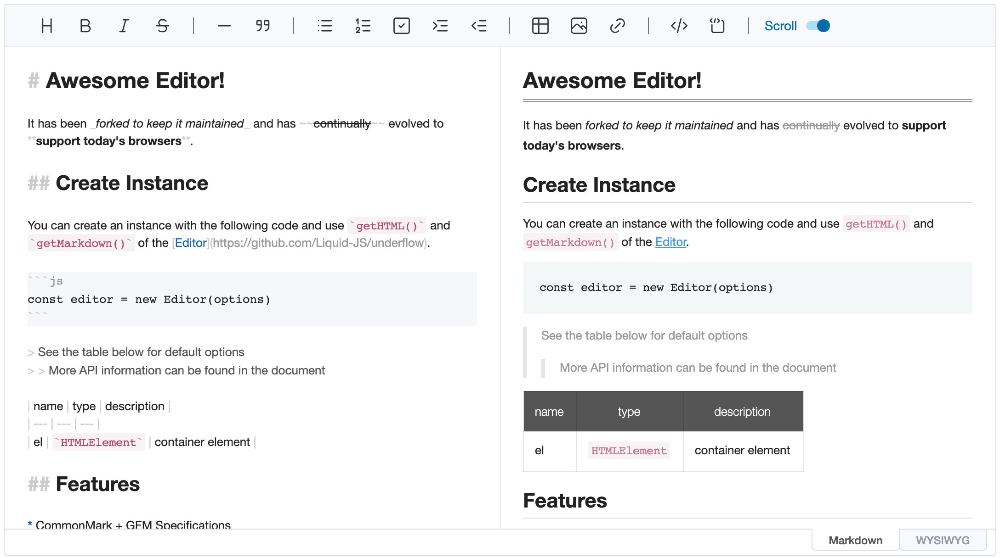

UnderFlow is published as a single ESM-only package, @liquid-js/underflow. ProseMirror and DOMPurify are peer
dependencies, so install them alongside it:
yarn add @liquid-js/underflow prosemirror-commands prosemirror-history prosemirror-inputrules \
prosemirror-keymap prosemirror-model prosemirror-state prosemirror-transform prosemirror-view dompurify
The package provides the following entry points:
| Import | Contents |
|---|---|
@liquid-js/underflow |
Editor and EditorCore |
@liquid-js/underflow/viewer |
Viewer |
@liquid-js/underflow/parser |
The incremental markdown parser |
@liquid-js/underflow/i18n/<locale> |
UI translations, e.g. i18n/de-de (see i18n) |
@liquid-js/underflow/plugins/code-syntax-highlight |
Syntax highlighting for code blocks |
@liquid-js/underflow/styles/editor.css |
Editor UI and contents styles |
@liquid-js/underflow/styles/editor-only.css |
Editor UI without the contents styles |
@liquid-js/underflow/styles/viewer.css |
Contents styles for the viewer |
@liquid-js/underflow/styles/theme/dark.css |
Dark theme, enabled with the theme: 'dark' option |
@liquid-js/underflow/styles/plugins/code-syntax-highlight.css |
Styles for the code syntax highlight plugin |
Add the element that the editor will be created in.
...
<body>
<div id="editor"></div>
</body>
...
The editor is the package's Editor export.
import { Editor } from '@liquid-js/underflow'
Import the editor's stylesheet. Your bundler needs to support CSS imports; otherwise, add the file from
node_modules/@liquid-js/underflow/lib/styles/ to your page another way.
import '@liquid-js/underflow/styles/editor.css'
If you want to style the contents yourself, import @liquid-js/underflow/styles/editor-only.css instead, which contains
only the editor UI. For the dark theme, also import @liquid-js/underflow/styles/theme/dark.css and set the
theme: 'dark' option.
Create an instance with options, then call the editor's API on it.
const editor = new Editor({
el: document.querySelector('#editor')
})

const editor = new Editor({
el: document.querySelector('#editor'),
height: '600px',
initialEditType: 'markdown',
previewStyle: 'vertical'
})

The basic options are:
height: Height as a string, or auto, e.g. 300px | autoinitialEditType: Initial editing mode, markdown | wysiwyginitialValue: Initial markdown contentpreviewStyle: Preview style of the markdown mode, tab | verticalplaceholder: Text shown while the editor is empty, e.g. Write something...; setPlaceholder() changes it latertoolbarStyle: wrap lets the toolbar wrap onto several lines instead of collapsing items into the "More" button, which keeps every button reachable for keyboard and screen reader users. default | wrapAll options are documented in the type definitions (EditorOptions in @liquid-js/underflow).
import { Editor } from '@liquid-js/underflow'
import '@liquid-js/underflow/styles/editor.css'
const editor = new Editor({
el: document.querySelector('#editor'),
height: '500px',
initialEditType: 'markdown',
previewStyle: 'vertical',
initialValue: '# Hello'
})
editor.on('change', () => console.log(editor.getMarkdown()))